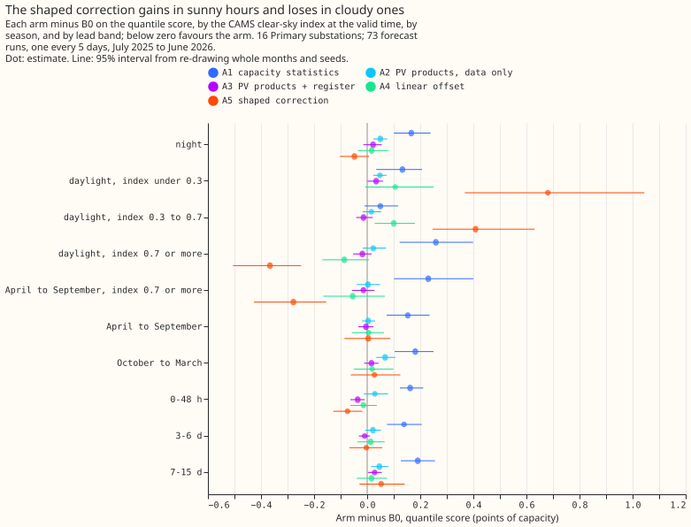
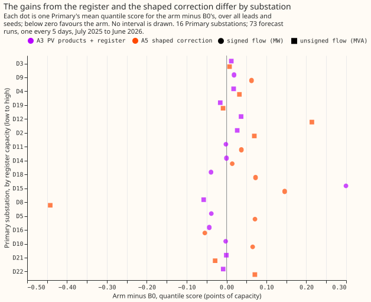

Experiment 31: do embedded-solar capacity features lower the error of Primary demand forecasts?
We asked whether telling a demand forecast for Primary substations (substations that step power down to the local distribution network) how much solar generation capacity is installed behind each substation lowers its error. The capacity estimates came from the demand data and from a register. We added several versions of installed-capacity inputs to the best demand forecast, plus a control whose capacity values were shuffled between forecast dates within each series and calendar month, and scored 16 Primary substations over 73 forecast runs. None lowered the error. The reference forecast had a (smaller is better) quantile score of 5.32 points of capacity, and the best arms matched it to within 0.01 points. Two arms were worse: the one that added capacity statistics as columns and the one that added PV products built from the data alone.
Inconclusive: none of the capacity features lowers the all-lead quantile score of Primary demand forecasts, and the two arms that came closest cannot be separated from zero. B0 is the 00019 stack without its half-life: N1 with the 14-day correction and the 1.15 spread factor. Scores are the quantile score over all leads, in points of capacity (1 point is 1% of a series' effective capacity), on 16 Primary substations, 73 forecast runs every 5 days from July 2025 to June 2026, with ENS weather. B0 scores 5.32. A3 (PV products using the register) scores 5.32, A5 (the shaped correction) 5.33, A4 (the linear offset) 5.33, and the shuffled control A6 5.31. A1 (capacity statistics as columns) scores 5.49 and A2 (PV products from data alone) 5.35, which are losses. ENS is the European Centre for Medium-Range Weather Forecasts' ensemble forecast, which has 51 members. The quantile score measures how well the forecast quantiles fit what happened, and smaller is better.

| Arm | Quantile score | Median error | Contrast with B0 (99.17% interval) |
|---|---|---|---|
| B0, the 00019 stack | 5.32 | 7.34 | |
| A1 capacity statistics | 5.49 | 7.59 | C1 +0.167 (+0.091 to +0.243) |
| A2 PV products, data only | 5.35 | 7.39 | C2 +0.036 (+0.002 to +0.074) |
| A3 PV products with the register | 5.32 | 7.35 | C3 +0.006 (-0.022 to +0.033) |
| A4 linear offset | 5.33 | 7.34 | C4 +0.012 (-0.051 to +0.081) |
| A5 shaped correction | 5.33 | 7.35 | C5 +0.016 (-0.069 to +0.100) |
| A6 shuffled control of A3 | 5.31 | 7.33 | C6, A3 minus A6: +0.018 (-0.002 to +0.033) |
manual_heuristic |
5.89 | 8.23 | |
climatology |
7.46 | 10.33 |
The verdict follows the pre-registered rule. No arm reached "port" or "small gain". A1 and A2 are losses (intervals wholly above zero), A3 is a null with a half-width of 0.03, and A4 and A5 are nulls with half-widths of 0.07 and 0.08, wider than the 0.05 that would have excluded a gain of that size, so the verdict is inconclusive and not refuted.
The shaped correction trades gains in sunny hours for losses in cloudy ones. These are 95% breakdowns, which decide nothing. A5 lowers the score by 0.37 in daylight at a clear-sky index of 0.7 or more over the year (-0.51 to -0.25), and by 0.28 in April to September at that index (-0.43 to -0.15; B0 scores 5.63 there). It raises the score by 0.68 at a clear-sky index under 0.3 (+0.37 to +1.04) and by 0.41 between 0.3 and 0.7. Over April to September as a whole A5 is level with B0 (+0.004). At leads under 48 hours A5 lowers the score by 0.07 (-0.13 to -0.02), but the shuffled control A6 lowers it by 0.05 (-0.08 to -0.02), so that gain is not specific to the shaped correction. The slope of the 14-day residuals on PV output was fitted in 1,380 of 1,460 series-runs (20 series times 73 runs, including the BSPs and GSPs) and averaged -0.11 over all runs, so the substations hold PV that N1 under-allows for. One possible explanation of the cloudy-hour losses, untested here, is that the ENS irradiance forecast is biased against the CAMS irradiance the slope was fitted on, which would make the correction too large on cloudy forecasts.

The register adds little at Primaries. The median data estimate of PV capacity at a Primary was about 0.33 of effective capacity (0.35 data only, 0.33 with the register, on validation origins) against a register median of 0.08, so the weights favour the data estimate. A3 minus A2 is -0.030 (-0.061 to -0.007, 10 of 12 months negative), so the register improves on the data-only arm, but A3 is not distinguishable from the shuffled control (C6), so the gain is not evidence of capacity information. The estimator recovered an injected capacity ramp in the known-answer check (F1's error under 0.0011 share of capacity on 2 directional Primaries, measured after subtracting each series' un-injected F1, against a standard error of about 0.05).
At the 2 GSPs, true PV_Live generation lowers the score by 0.82. B0 scores 19.95 and the oracle A7 19.13 (A7 minus B0 -0.82, 95% interval -1.06 to -0.55; 12 of 12 months). The 2 BSPs and 2 GSPs are descriptive; A3 and A5 move them by less than 0.3 points, and no contrast is drawn.

Limits
- One validation year gives 12 month blocks, so A4 and A5 cannot exclude a gain of 0.07 to 0.08 points.
- A4 refits only the 8 directional Primaries, so C4 is pooled over 16 and diluted by half; the 8 non-directional Primaries reuse B0. Their folded readings (PV above demand) also enter F1 to F5, which no arm corrects.
- CAMS publication delay was not measured. The features assume CAMS is available 48 hours before the origin, as the ECMWF notice of February 2026 says ("up to yesterday").
- The register is a prior at Primaries by assumption: rows of 1 MW or more are treated as metered, because no larger solar farm is listed under a Primary in the metadata table.
- Not run: the no-fit baseline (
manual_heuristicon gross demand minus modelled PV), and the weekly lags of 00030 in every arm. - No tweak after the first run: the plan allowed one post hoc change; the sunny and cloudy split of A5 suggests calibrating ENS irradiance to CAMS first, which the next experiment can test.
Plan, written before any code ran
Plan: sizing
- Stored data: prediction sets and a daily feature table under
data/ml-experiments/. - Production serving path: not touched.
- Degradation rule: not touched.
- Defensible designs: more than one (feature, offset, or correction; several estimators). The arms below test each family once.
- Callers: the scripts copy 00019's helpers and read its stored N1 fit, which the author could name without searching.
Size: complex, because more than one design defensibly tests the hypothesis and the experiment adds a data source (the ECR). Plan, code, and write-up each get one Sonnet review.
Earlier advice followed and departed from
- Followed: compare against N1 with the 14-day correction and the 00019 stack, not N1 alone
(00030); keep
colsampleat 1.0; report absolute scores beside contrasts; guard against one substation setting the pooled figure (00007). - Departed from: 00030's weekly mean and median lags are not in B0, because 00030 has not merged; a follow-up can add them to every arm.
Method
Capacity enters as a trailing estimate that changes over time, or as a linear offset. N1 fits one model per series, so a per-series constant gives the trees nothing. Every feature is computed at each forecast origin from power and irradiance observed up to 48 hours before the origin, so the same function serves training rows and validation rows.
- Per-unit PV,
p_unit: AC output of a generic fleet per MW of AC capacity (studies.pv_physics.plant_power_mw, tilt 35 degrees, azimuth 180 degrees, DC 1.15 MW, AC 1.0 MW, times a 0.86 system derate; untuned). Fitted constants (the shrinkage weights and prior variance) use training origins only, which are those before 2025-07-01; validation origins run from 2025-07-01 to 2026-06-30. At lag times the irradiance is CAMS GHI at the substation's location, which ECMWF publishes with a delay of at most 2 days (an ECMWF notice of February 2026 says "up to yesterday"; older pages say 2 days), so it exists before the 48-hour cut-off. The latency was not measured; if it exceeds 48 hours, the features would need the ENS analysis proxy, and the write-up says so. At valid times the irradiance is the ENS member'sshortwave. - The ECR enters differently by series type (maintainer refinement, 2026-10-15). A Primary
series is "Disaggregated Demand": NGED has already subtracted its metered generators, so the ECR
rows with their own meter are not in the series. The ECR is therefore only a prior for a Primary,
never a floor. The prior is the ECR solar capacity of the rows that have no meter of their own:
every connected solar row on the
Register Part 1 50kW - <1MWsheet. The rows of 1 MW or more are assumed to be metered, because the metadata table lists none of the larger solar farms under a Primary, and NGED's list of meters is not available to confirm it. ThePrimaryname must match exactly afterstudies.name_matching.normalise(no fuzzy matching), and the prior is zero where no row matches. A BSP or GSP series is "Raw Flow": the metered generators below it are not subtracted, so the ECR solar capacity of every row below the substation (bybulk_supply_pointorgrid_supply_pointname, usingSubstations.csvfor the hierarchy) is a floor on the PV in the series. The decision per ECR row is printed by the script. The August 2026 snapshot is used at every date, a small look-ahead that can only inflate the ECR arms. BSP and GSP series are descriptive. - Features, 28-day windows ending at the origin minus 48 hours, daylight half-hours (sun above 15
degrees):
- F1
cap_slope_28d: minus the slope of power onp_unit, with fixed effects for local hour by day type (weekday, or weekend or bank holiday). Null with fewer than 8 days. - F2
sunny_minus_cloudy_28d: mean power on sunny days (daily clear-sky index at least 0.7) minus cloudy days (at most 0.3), matched by hour and day type, over the matching difference in meanp_unit, sign flipped. - F3
cap_change_yoy: F1 minus F1 for the window 364 days earlier. - F4
unreg_cap:c - e, whereeis the ECR capacity of the series (prior or floor, above) andcis the capacity estimate. For a Primary,cisc_fit(F1) pulled towardseby inverse-variance weights, with the prior variance fitted on training origins only, and clipped at zero; it may fall belowe. For a BSP or GSP,c = max(c_fit, e). - F5
cap_total:c. In the data-only variantc = c_fit, clipped at zero, andeis unused. - F6
pv_hat:c * p_unit_ENS(valid). F7lag_gross_2d: the power at the latest earlier time with the valid time's half-hour of day that is at least 48 hours before the origin, plusc * p_unit_CAMS(that time). F8pv_ecr_hat:e * p_unit_ENS(valid).
- F1
- Known-answer checks before real data: (a) inject
-c(t) * p_unit_CAMS(t)withcrising linearly from 0 to 20% of capacity into two directional Primaries and check that F1, F2, and F4 recoverc(t)within one standard error; (b) at the two GSPs comparecwith PV_Live's installed capacity over the same months (trend only).
Arms
Rows fold_a_every5d_v1, ENS weather, seeds 0 to 2, N1's 00013 configuration. Every arm carries
the 14-day correction and the 1.15 spread factor, as B0 does.
| Arm | Change from B0 | Extra columns |
|---|---|---|
| B0 | The 00019 stack | 0 |
| A1 | Capacity statistics F1, F2, F3 | 3 |
| A2 | Data-only PV products F6, F7 (c = c_fit) |
2 |
| A3 | PV products with the ECR (prior or floor by series type): F6, F7, F8 | 3 |
| A4 | Linear offset: base_margin = -c * p_unit_ENS(valid), c with the ECR as above; directional Primaries only |
0 |
| A5 | The flat 14-day mean replaced by a + b * p_unit fitted on the same residuals; b = 0 with fewer than 3 distinct sunny origin-run dates (daily clear-sky index at least 0.7) in the window, and b not sign-clipped; no refit |
0 |
| A6 | Shuffled control of A3: c permuted across origin dates within series and calendar month, with F6 and F7 recomputed from the shuffled c; F8 keeps the true e |
3 |
| A7 | Oracle at the 2 GSPs: B0 plus PV_Live at the valid time | 1 |
A5 tests a sunshine-shaped correction of the median's remaining error, not capacity: the residuals come from runs whose forecasts already contain some PV signal. A4 reuses B0 on the 8 non-directional Primaries, which fold when PV exceeds demand.
Plus a no-fit baseline: manual_heuristic on gross demand minus c * p_unit_ENS(valid).
Departures from the design
- No temperature covariate in F1. An archive of ENS analysis temperature at lag times would be daily for training runs and 5-daily for validation runs, so training and validation would differ. F3 cancels most of the seasonal confound instead.
- No outcome-based half-hour selection on non-directional MVA series. Selecting half-hours by observed power biases the slope, so every daylight half-hour is used in A1 to A3 as well; the folded readings are a stated limit, not a result, and the write-up splits directional from non-directional series. The 99.17% interval's half-width is the one the refuted rule reads.
Evaluation
Primary first (16 series), absolute scores beside contrasts. BSP (2) and GSP (2) are descriptive and never averaged into the Primary figure. Breakdowns, all exploratory at 95%: clear-sky-index bins at the valid time (night, under 0.3, 0.3 to 0.7, at least 0.7); sunny against cloudy days; April to September against October to March; lead bands 0 to 48 h, 3 to 6 d, 7 to 15 d; per substation ordered by ECR capacity over effective capacity, split by directional MW and non-directional MVA; the pooled contrast without the series of largest B0 error and without D8, D12, and D22. The clear-sky index is used to bin only, never as an input.
Limits to expect
One validation year gives 12 month blocks, so a 0.05-point effect may be undetectable. The ECR prior is wrong in both directions at Primaries (an unmetered row may be missing or unregistered, and the snapshot includes future connections). The ENS forecast irradiance is biased against CAMS, so a capacity estimated on CAMS mis-scales when applied to ENS.